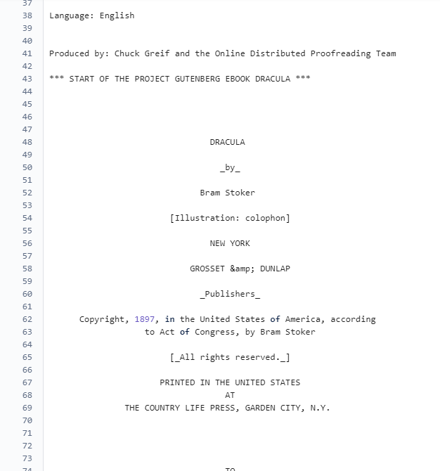
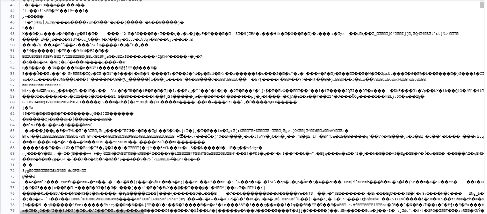

Rust AES Encryption CLI Tool
Link to RepositoryThis project centers around the development of a Rust-based Command Line Interface (CLI) tool designed for Advanced Encryption Standard (AES) encryption with Cipher Block Chaining (CBC) mode. The primary goal is to showcase proficiency in systems programming using Rust and provide a secure and efficient tool for encrypting sensitive data.
Key Features:
- AES Encryption: Implementing the AES encryption algorithm for securing data.
- CBC Mode: Utilizing Cipher Block Chaining mode to enhance the security of the encryption process.
- Command Line Interface: Creating a user-friendly CLI for easy interaction and encryption operations.
- Rust Language: Demonstrating proficiency in systems programming with Rust, known for its memory safety and performance benefits.
The tool allows users to encrypt data by specifying input files, encryption keys, and other relevant parameters via the command line interface. This ensures flexibility and ease of integration into various systems and workflows.
The presentation of this project within an online portfolio aims to highlight not only the technical aspects of implementing cryptographic algorithms in Rust but also the importance of creating secure and accessible tools for data protection. It serves as a testament to the versatility and reliability of Rust in the realm of systems programming.

